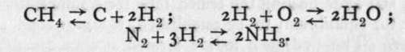

Classification Of Compounds. Part 2
Description
This section is from the book "Modern Chemistry", by William Ramsay. Also available from Amazon: Modern Chemistry: Theoretical and Modern Chemistry (Volume 2).
Classification Of Compounds. Part 2

Hydrogen also combines with sulphur when passed through a flask containing boiling sulphur, and sulphuretted hydrogen, H2S, decomposes when raised to a low red heat.
Interesting relations are to be seen with the compounds of the halogens with hydrogen. In preparing fluorine by the electrolysis of hydrogen-potassium fluoride, KHF, in presence of hydrogen fluoride, H2F2, it is possible, by stopping the exit of the hydrogen, to cause a bubble to pass the bend of the U-tube and to rise into the fluorine; the instant the gases unite there is a sharp explosion. This shows that these gases unite even in the dark to form H2F2. Chlorine and hydrogen, on the other hand, do not combine in the dark, but, when exposed to diffused daylight, slow but complete combination ensues ; in bright sunlight, or when illumined by the light from burning magnesium, the mixture of gases explodes, forming HC1. Bromine and hydrogen unite to form HBr when a current of hydrogen, having bubbled through a wash-bottle of bromine, passes through a red-hot tube ; with excess of hydrogen the union is practically complete. Iodine and hydrogen, on the contrary, unite very incompletely to produce HI; and if hydrogen iodide be heated, a large proportion of it is decomposed into hydrogen and iodine. This change has been investigated much more completely than other changes of the same character already mentioned; and as it is characteristic of all such reversible reactions, we shall consider it in somewhat greater detail.
The rate at which hydrogen iodide is produced from a mixture of hydrogen and iodine at any constant temperature is much more rapid than that at which the reverse change of hydrogen iodide into iodine and hydrogen takes place. This rate was not difficult to determine. Weighed quantities of iodine were placed in a tube filled with hydrogen, and after heating the sealed tube for a sufficiently long time for equilibrium to be established, it was opened under water. The hydrogen iodide formed at once dissolved in the water, and the residual hydrogen was measured. The amount of uncombined iodine remaining in the water was then estimated by known processes. It was thus possible to find the ratio of the combined to the uncombined hydrogen. Now, it was discovered many years ago that the rate of chemical change depends on the amount of each of the reacting substances present in unit volume-a condition expressed by the term "active mass." Thus, if we double the amount of hydrogen in the mixture of the gases mentioned, we double its "active mass." Let i« denote the number of molecules in unit volume of the iodine gas, and h2 that of the hydrogen, and let 2hi be that of the hydrogen iodide formed by their interaction. Then, as the rate of formation of hydrogen iodide is proportional both to i and to h, it will be proportional to their product, h x /. And as H2 + I2= 2HI, the rate of change of HI into H2 and I2 will be 2hi x 2hi or ^.(hi)2. If we call the rate of formation i, and that of decomposition k\ the proportion of these rates to each other will be h/h' = (h x i)/^.(hi)29 if the gases are present in molecular proportions. At the temperature 440°, and at one atmosphere pressure, it was found that, taking the total hydrogen as unity, 0.28 was free and 0.72 combined, after a sufficient time had been allowed for the change to complete itself. Now, the iodine free must have been equal in number of molecules to the free hydrogen, i.e. 0.28, and the same number of atoms of iodine must have existed in combination as of hydrogen in combination; hence 0.28x0.28/4(0.72x0.72) = 0.0375 = k/k'. This means that at 44O0 molecules of hydrogen iodide decompose into hydrogen and iodine at a rate only 0.0375 (or one twenty-sixth) of that at which combination takes place between the two gases.
(b) The action of an element on a compound leads to the formation of many hydrides. This process has been pretty fully treated in the description of the methods of preparation of elements. For example, on passing a current of hydrogen over hot cupric oxide, water, H2O, is formed, while the oxide is reduced to copper, CuO + H2 = Cu + H2O. The oxides mentioned on p. 16 are thus reduced. It is not so usual for sulphides to lose sulphur on heating them in a stream of hydrogen; indeed, it is only those sulphides which themselves decompose when heated that yield to such treatment; but hydrogen fluoride, chloride, bromide, and iodide are formed on heating the halides of many metals in a current of hydrogen. The process, however, is not one which is used for the preparation of these hydrides.
(c) The third method-that of heating a compound- is also not in use as a means of preparing hydrides, but it is often employed in order to produce the compound from which the hydride is separated. Thus, all compounds containing water of crystallisation, when heated, lose water when raised to a high temperature; and double compounds of ammonia, too, lose ammonia on rise of temperature. Such compounds as calcium chloride, CaCl2, crystallise with water. The formula of the hydrated compound is CaCl2. 6H2O ; a similar compound with ammonia, CaCl2.6NH3, is also known ; compounds like these lose water or ammonia when heated. By this plan Faraday succeeded in liquefying ammonia, which at ordinary temperatures is a gas. Having sealed up the ammonio-chloride of calcium or of silver, AgCl.NH3, in an inverted U-tube, one leg was cooled with a freezing mixture, while the other was heated, and the gas liquefied under the combined influence of cold and pressure.
Continue to:
- prev: Chapter II. Classification Of Compounds
- Table of Contents
- next: Classification Of Compounds. Part 3